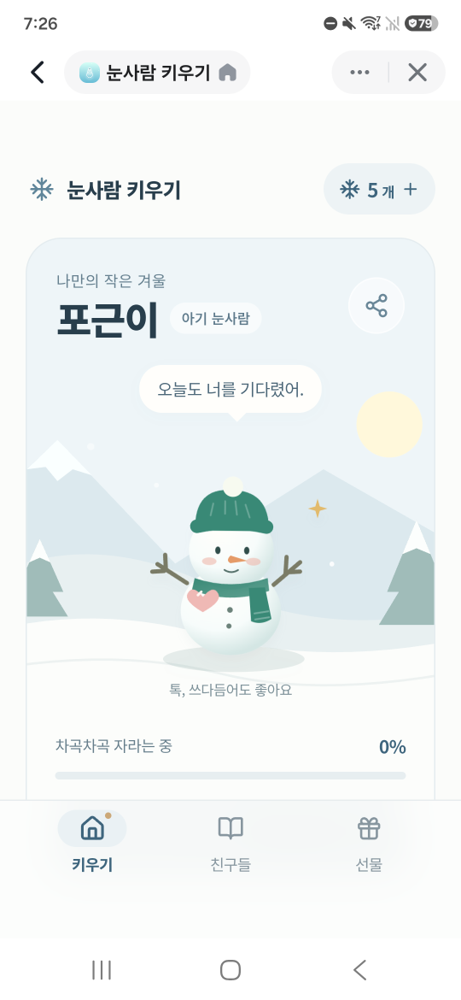

눈사람 키우기 · 손가락이 심심할 때동그라미 하나가
동그라미 하나가
생각보다 어렵죠.
한 바퀴 그려 점수를 보고, 모은 눈덩이로 겨울 친구를 키워요. 이번엔 조금 더 둥글게.
- 손가락으로 동그라미 그리기
- 점수를 보고 눈덩이 모으기
- 겨울 친구 여섯을 도감에 모으기
링크가 열리지 않으면 토스 앱에서 눈사람 키우기를 검색해 주세요.
일부 기능에 광고가 있어요. 눈덩이는 게임 재화이며 현금·토스포인트로 교환되지 않아요.
